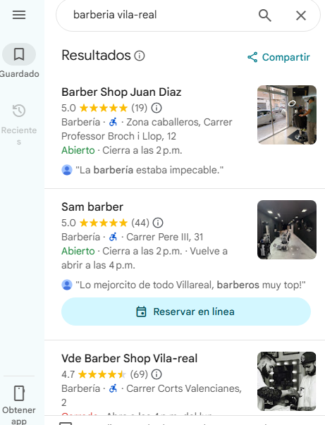
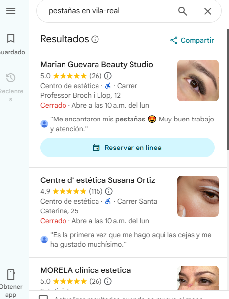

En Castellón hay cientos de negocios compitiendo en Google Maps. Los que salen los primeros no tienen más suerte — tienen la ficha bien hecha. Eso es exactamente lo que hago por tu negocio en Castellón, sin que pagues un euro en publicidad.
Negocios de Castellón y Vila-real en #1 de Google Maps sin pagar publicidad
En Castellón hay más competencia que en Vila-real. Por eso la estrategia tiene que ser más precisa. Cada detalle de tu ficha cuenta.
Cuando alguien busca tu servicio en Castellón, Google muestra solo 3 negocios antes del mapa. Esos 3 se llevan el 90% de las llamadas. El objetivo es que uno de ellos seas tú.
Los anuncios de Google se pagan por clic y cuando dejas de pagar, desapareces. El posicionamiento en Google Maps en Castellón es gratis y permanente si tu ficha está bien optimizada.
En Castellón capital la competencia en Google Maps tiene más reseñas que en municipios pequeños. Te ayudo a conseguir reseñas de forma constante para que no te quedes atrás.
Categoría exacta, descripción con las palabras que usan tus clientes de Castellón, fotos de calidad y servicios detallados. Lo que Google necesita para mostrarte antes que a tu competencia.
Cuántas personas han visto tu negocio en Google Maps en Castellón, cuántas han llamado, desde qué barrios te buscan. Datos reales, no suposiciones.
No es lo mismo posicionar una clínica dental en el centro de Castellón que un taller mecánico en Almassora. Cada sector y cada zona tienen su estrategia específica.
Resultados reales de negocios de la zona. Sin publicidad. Solo con la ficha de Google bien hecha y una estrategia de posicionamiento local.


En Castellón capital la competencia en Maps es mayor. Por eso el trabajo tiene que ser más fino y la estrategia más pensada que en municipios pequeños.
Miro quiénes son los 3 negocios que salen en el top de Google Maps en Castellón para tu sector, qué tienen que tú no tienes y qué es lo que les da ventaja. Eso es lo que atacamos.
Categoría exacta, descripción optimizada con las búsquedas reales de Castellón, horarios, fotos profesionales y servicios detallados. Todo lo que Google necesita para mostrarte.
Un cliente de Castellón no busca igual que uno de Madrid. Adapto cada palabra de tu ficha a cómo buscan realmente tus clientes en Castellón, Benicàssim y la provincia.
En Castellón capital los negocios con más reseñas dominan el mapa. Te doy una estrategia concreta para conseguir reseñas de tus clientes de Castellón de forma natural y constante.
Las fichas con más y mejores fotos posicionan hasta un 40% mejor en Google Maps. Te oriento sobre qué fotos subir y cómo nombrarlas para que Google las asocie a Castellón.
Cada mes te informo de cómo evoluciona tu posición en Google Maps en Castellón, cuántas personas te han visto y cuántas han llamado. Con datos reales de Google.
Mismo precio que para Vila-real. La diferencia está en la estrategia, no en el coste.
Las agencias SEO de Castellón aplican estrategias genéricas de Madrid o Valencia. Yo conozco cómo funciona Google Maps en Castellón y la Plana Baixa porque trabajo aquí.
El proceso es sencillo aunque la estrategia sea más compleja que en municipios pequeños.
Reviso tu ficha, analizo quién está en el top 3 de Google Maps en Castellón para tu sector y te digo exactamente qué hay que hacer para superarles.
Verifico y optimizo todo con las palabras que usan tus clientes de Castellón. Categoría exacta, descripción, fotos y servicios que Google necesita para mostrarte.
En Castellón las reseñas marcan más la diferencia. Te doy el sistema para conseguirlas de forma constante y superar a tu competencia en el mapa.
En 3-6 semanas tu negocio empieza a aparecer en las búsquedas de Castellón. Con datos reales de Google para que veas el progreso semana a semana.
El mejor SEO local de Vila-real y provincia. Me creó la ficha de Google Maps desde cero, la verificó, gestionó las fotos y las reseñas y en 15 días mi negocio estaba en el top 3 de mi sector. Super recomendado.
Gracias por todo, me ha puesto en el mapa. Excelente servicio, no dudaré en contratar más servicios.
Estaba buscando cómo reclamar mi negocio en Vila-real e incluso busqué hasta en Castellón. Él me solucionó el problema, gestionó reseñas y fotos. Ahora mi negocio sale muy bonito en Maps. Cercanía y precios muy razonables.
Los motivos más comunes en negocios de Castellón: la ficha no está verificada, la categoría es incorrecta, la descripción no incluye las palabras que usan tus clientes al buscar en Castellón, o tienes pocas reseñas frente a tu competencia. Pídeme el análisis gratuito y te digo exactamente qué falla en el tuyo en menos de 24 horas.
En Castellón capital la competencia en Google Maps es mayor que en municipios pequeños, así que los tiempos son algo más largos. De media entre 3 y 6 semanas para aparecer en el top 3 de tu sector en Castellón. Si la competencia en tu sector es baja, puede ser antes.
No. Google Maps es posicionamiento orgánico — apareces gratis si tu ficha está bien hecha. No pagas nada a Google por aparecer en el mapa. Lo que me pagas a mí es el trabajo de optimizar tu ficha para que Google te muestre antes que a tu competencia de Castellón.
Con una agencia de Castellón pagas su estructura: oficina, comerciales y gestores. Tu proyecto lo lleva alguien que no conoce tu negocio ni tu zona. Las agencias SEO de Castellón cobran entre 300-600€ al mes. Conmigo pagas desde 100€/mes y hablas siempre con quien hace el trabajo.
Sí. Trabajo con negocios de toda la provincia: Castellón capital, Benicàssim, Almassora, Burriana, Vila-real, Nules, Vall d'Uixó y cualquier municipio. La estrategia se adapta a cada zona porque la competencia en Google Maps es diferente en cada municipio.
Cada búsqueda en Google Maps en Castellón que no te encuentra es un cliente que va a tu competencia. Escríbeme y lo analizamos gratis hoy.
📲 Análisis gratuito por WhatsApp